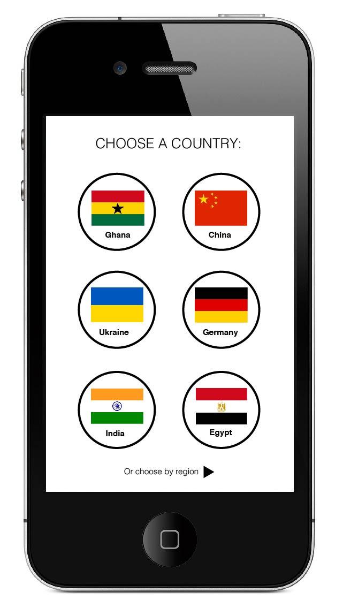
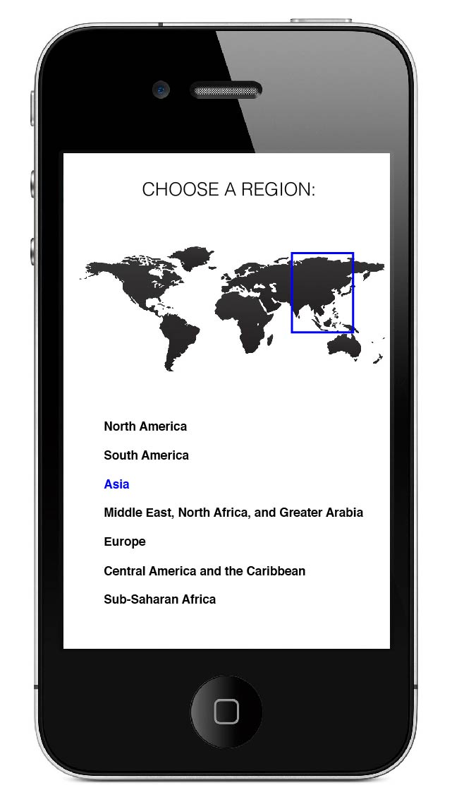
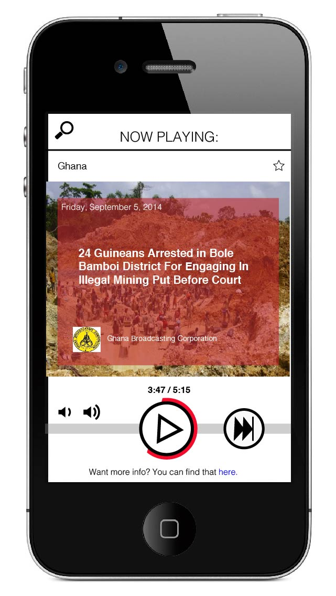

World Shuffle:
App Project
Overview
World Shuffle is an app prototype that focuses on curating international news radio broadcasts. The idea is based on the "pandora-ization" of news, similar to NPR One.
The app focuses on international news partnerships in order to create more authentic international reporting directly from the source.


A user would start by swiping through countries and selecting which one(s) they are interested in getting news from. The user also has the option to choose geographical regions, in order to get news from a broader scope. This is best for gaining insight on news that spans multiple countries, like the financial climate of the EU or labor issues in Asia. A user can choose to click on a region on the map or choose from the list below.

Once a user navigates to the player, it looks very similar to most music players so that it is familar and usable right away. There's an option to "star" or "favorite" news stories, in order to optimize subsequent content and to refer back to broadcasts that have been listened to already. Users also have the option to view additional resources, such as articles, videos or photos, using the link at the bottom.
Tools Used
I create the app mockups on Illustrator.